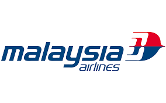
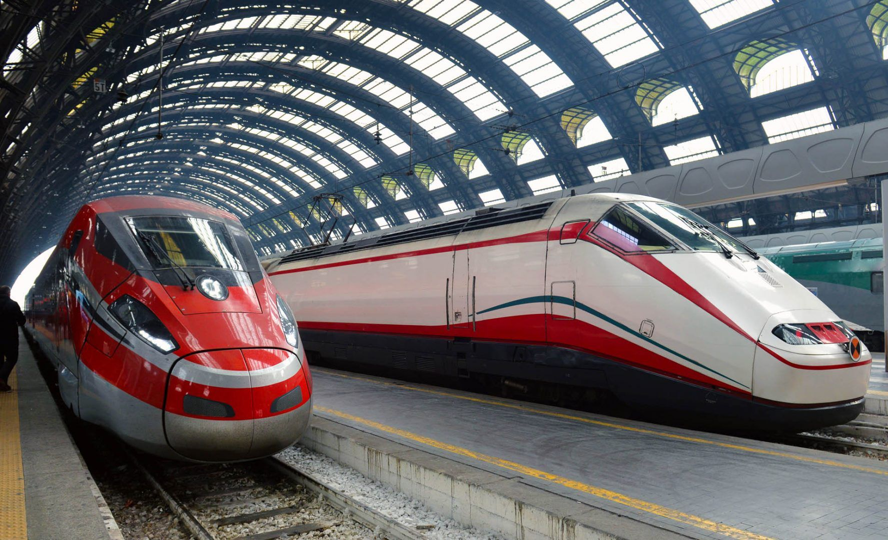
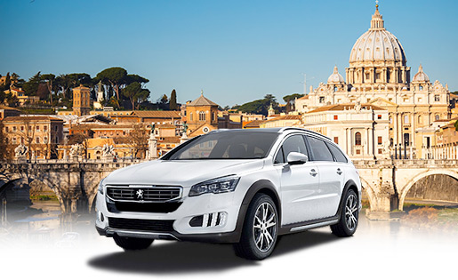
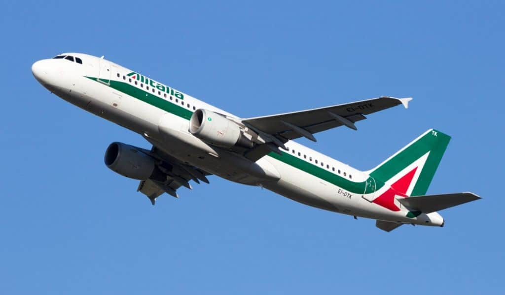
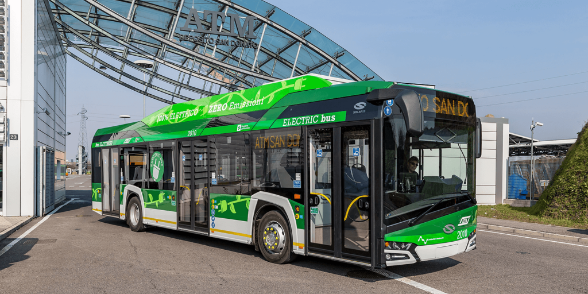
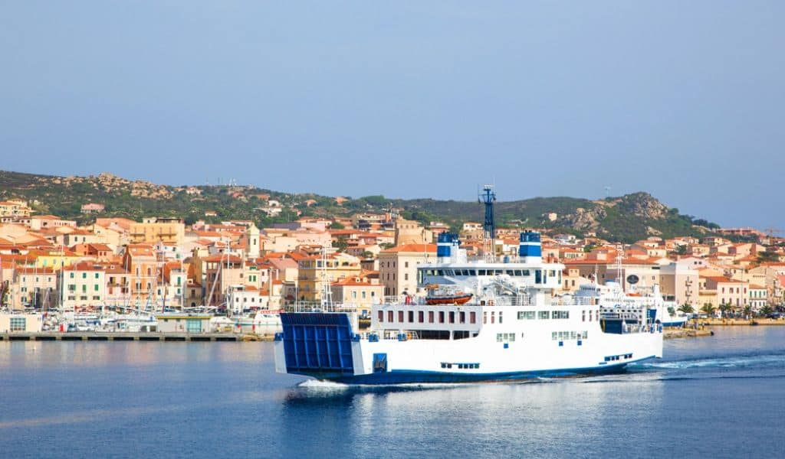
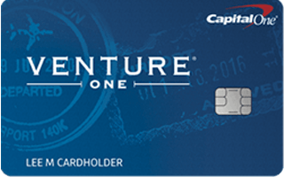
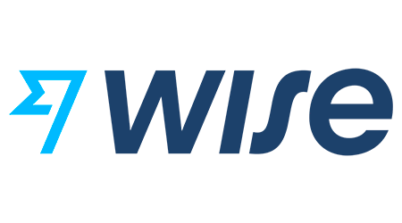
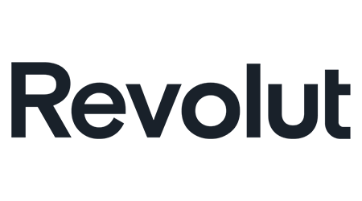

Transportation in Italy
Airlines Comparison
 |
 |
 | |
| Rate | RM6371 | RM5150 | RM5757 |
| Transit | 1 stop | 1 stop | 2 stop |
| Ticket | Book Now | Book Now | Book Now |
Getting Around Italy by Train
The best way to travel around Italy, if you mainly want to visit the cities like Rome, Florence and Venice, is by train. Italy has an extensive network of both fast speed inter-city trains and regional services that connect the smaller cities and towns. Travel by train in Italy is fast, efficient, comfortable and convenient. Trains go up to speeds of 300km / 185 miles per hour which cannot be matched by car, even if you’re driving a Ferrari! You can relax in your seat with access to power and wifi. There’s usually a snack bar. And room for your luggage in the overhead racks or in compartments at the end of each carriage. Train stations are generally located in the center of cities and towns which means there is no need to negotiate traffic and congestion or find expensive and secure parking.
Travel by Car in Italy
Driving in Italy is fun and can take you to places that others will not be able to reach easily using trains and buses. In fact, many off the beaten path towns and villages are only accessible by car. The best places to drive in Italy are Tuscany, Sicily, Puglia, the Dolomites, along the Riviera coast and through Umbria and Le Marche. This is where you’ll see the picturesque villages, rolling green hills and coastal vistas of your dreams. We recommend renting a car if you want to explore the countryside and lesser known regions that are not well connected by high speed trains and other regional services.
Flying within Italy
Flights in Italy are available but with the exception of a few key routes they rarely make sense from a convenience or cost perspective. Although you can find cheap flight deals (we use Skyscanner), many of them are with low cost airlines that will charge extra for checked luggage and seat allocation. The airports are generally on the outskirts of major cities so you’ll need to factor the time and cost of getting to and from each one. Plus the waiting time for security and potential air traffic delays.
Buses in Italy
If you’re looking for a budget alternative to trains, Italy is also served by buses. There is no national bus service however so finding the best routes and prices requires a bit of scouting around. Flixbus has a huge network of bus routes in Italy between the main cities as well as smaller cities. With comfortable seats, power and wifi onboard, if you are not on a tight schedule and want to save some cash then the bus is a great solution. Some cities in the south of Italy, especially Puglia, are not well served by trains. In this case Flixbus can be very useful and a great alternative to driving long distances. If you’re looking for a budget alternative to trains, Italy is also served by buses. There is no national bus service however so finding the best routes and prices requires a bit of scouting around.
Ferries in Italy
The Italian peninsula relies on several ferry services between the mainland and Sicily and Sardinia as well as islands in the bay of Naples and throughout the lakes region. To get to Sicily there is a short car ferry ride from Reggio Calabria to Messina or overnight ferry services from Naples, Civitavecchia (port of Rome) and Genoa to Palermo. The ports of Sardinia – Olbia, Golfo Aranci and Porto Torres – have services to Livorno and Genoa. With journeys taking 8 hours or more they are useful only if you are taking a car over to the island.
Contactless Smart Card
The official currency of Italy is the euro, but the country is still somewhat a cash-based economy. You won’t pay in cash all the time, as there are shops and merchants in Italy that are well-equipped to accept card payments. Visa and Mastercard are more common than American Express. Look for a card that doesn’t charge for international ATM withdrawals or currency conversion and you’ll have a vacation without paying numerous extra fees
|  |  |  |
| Capital One VentureOne Rewards Credit Card | Wise Multi-currency | Revolut |
| Travel card with no annual fee | Send and receive 50+ currencies right from your phone | 28+ currencies and real exchange rates. Crypto deposits aren't FDIC insured |
| Go to site | Go to site | Go to site |